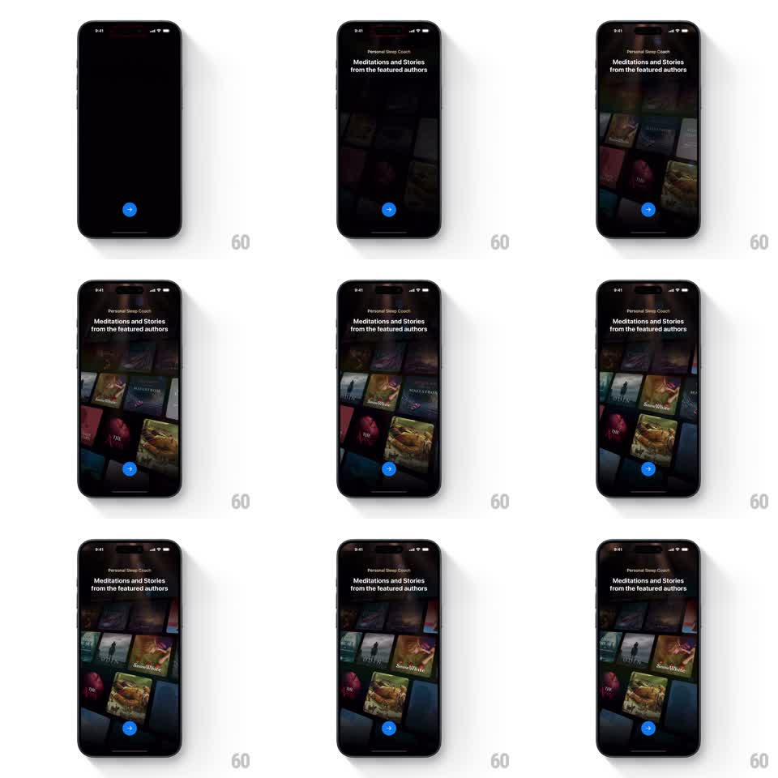

Media
Frame-by-frame

Rebuild this animation 1:1: ShutEye's story cover drift - under "Meditations and Stories from the featured authors", an angled wall of story covers fades in and drifts slowly along its diagonal.

Rebuild this animation 1:1: ShutEye's story cover drift - under "Meditations and Stories from the featured authors", an angled wall of story covers fades in and drifts slowly along its diagonal. ## Integration Integration: stack-agnostic spec - springs given as stiffness/damping, timed motions as duration + curve; map every value to your framework and animation library of choice. ## Scene A dark onboarding page with the "Personal Sleep Coach" eyebrow and headline "Meditations and Stories from the featured authors". Behind the text, a large grid of illustrated story covers (Snow White, adventures, fables) tilted as a perspective wall, fading toward the edges. A blue arrow button sits below. ## Motion spec Pattern: angled cover wall with slow drift, continuous. - The cover wall fades in from black (800ms), covers at full color in the center columns and dimming toward the top and bottom edges. - The whole wall drifts slowly along its diagonal axis (roughly 12px per second, linear and seamless, wrapping covers around the edges). - Individual covers hold a subtle depth: center covers crisp, edge covers slightly darker and softer. - The headline and button stay fixed over the wall with a soft scrim. ## Calibration - The drift is ambient - barely perceptible per frame, clearly moving over seconds. - No cover ever pops at the wrap point; fade masks hide the seam. ## Reduced motion Static cover wall. ## Don't miss - The wall is rotated as a plane, not a flat grid - perspective tilt is constant. - Covers vary in size across rows, like a bookstore shelf, not a uniform grid.